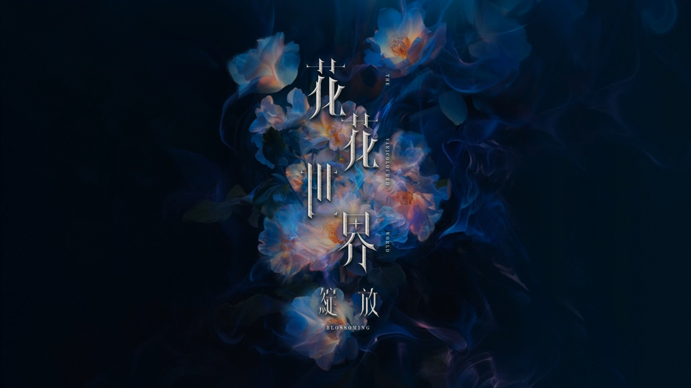

花花世界．綻放_聯合畢業音樂祭
重啓後叢生，成殿後綻放⋯
❁
南臺科大史無前例畢業季活動，將與大家見面❗
嗨翻校園連續兩天，讓你玩到沒力氣🥵😎
逛到腿軟的市集🍦唱到燒聲的演唱會🎤
還有好多好多值得你前來體驗的活動😻😻
- 負責業務: 視覺動態設計、文宣設計
- 設計日期: 2024年6月
重啓後叢生，成殿後綻放⋯
❁
南臺科大史無前例畢業季活動，將與大家見面❗
嗨翻校園連續兩天，讓你玩到沒力氣🥵😎
逛到腿軟的市集🍦唱到燒聲的演唱會🎤
還有好多好多值得你前來體驗的活動😻😻
體驗與眾不同的大學生活，感受獨有的大學青春熱血。
集結五大性質社團展出，配合你的不同興趣選擇。新生們一定要參加！
113學年度首場南臺科大社團博覽會，將於09/25活力登場💥💥
後疫情的時代，社團發展經歷重重關卡
能量正重新萌芽發展🌱
期許社團系會的活動與運作能更加繁榮
讓我們引頸翹望，期盼更輝煌的時刻到來✨
象徵從歷練的艱辛中找到方向，邁向自我突破與成長的開始
讓我們用血與汗，創造屬於我們的輝煌！
期盼透過此次春季幹訓凝聚你我的力量，
共創活動人們的新篇章。
象徵從歷練的艱辛中找到方向，邁向自我突破與成長的開始
讓我們用血與汗，創造屬於我們的輝煌！
期盼透過此次春季幹訓凝聚你我的力量，
共創活動人們的新篇章。
你問大學到底在學啥？來參加這場就對了！
全校首次超展開聯合迎新，跨系破冰、團隊挑戰、超爽大獎通通來！
用最狂的方式打開你的大學生活序章！
亂，為世間？何物？
曲直的理論，成為這亂源之計。
這無情理和的世間，
只用是非定義一切，
歌裡藏人間事，詞中述百年情。
鐵道悲聲日據，鹽田苦汗清明。
愛戀隨風起伏，思鄉逐浪浮沉。
細聽台灣老調，如聞歷史回音。
新的一年，新的一群人，
帶著風格，捲起浪潮。
114年全國大專校院學生會成果展 參戰！
與學生行政中心協作製行會務年度特色簡報。
以「深化培力・永續傳承」為本年度核心宗旨，
持續精進會務整體運作的模式。

在古色叢生的都市裡，承載歡聲笑語的草原。
勇敢綻放青春的學子，一顆以熱情為動力的赤子之心。